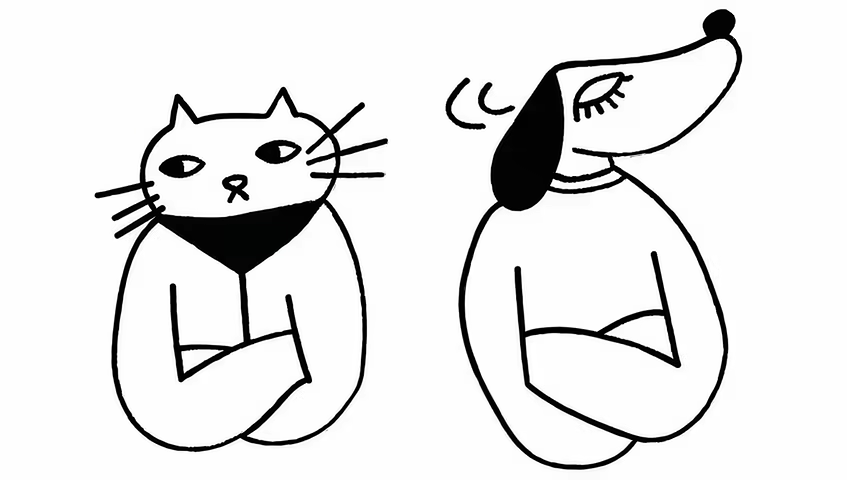
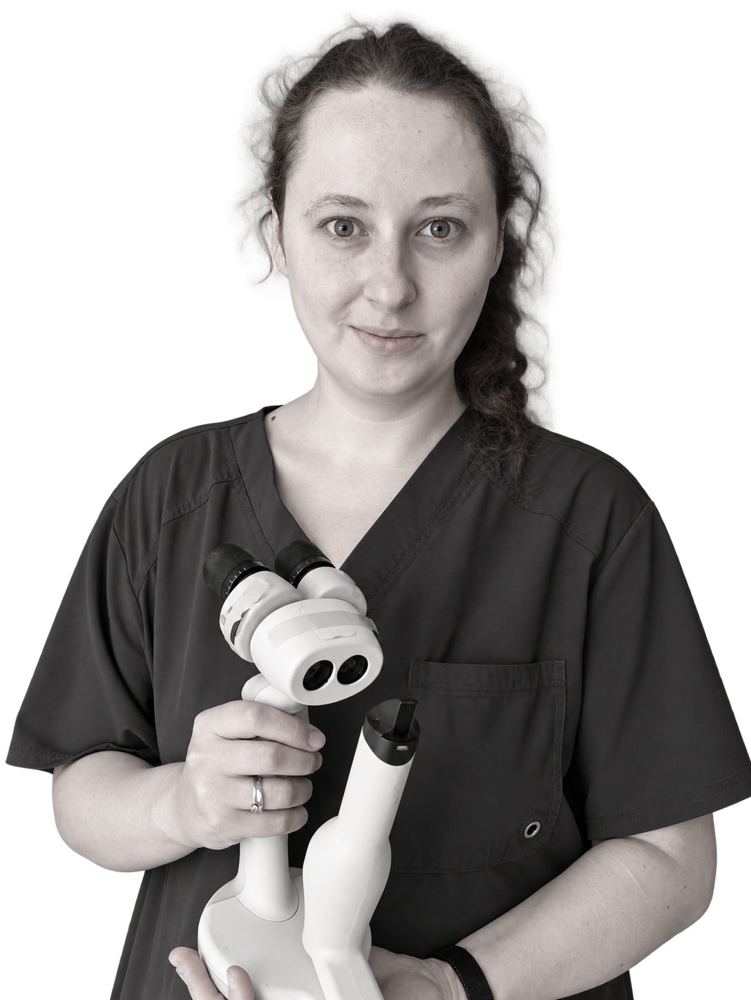
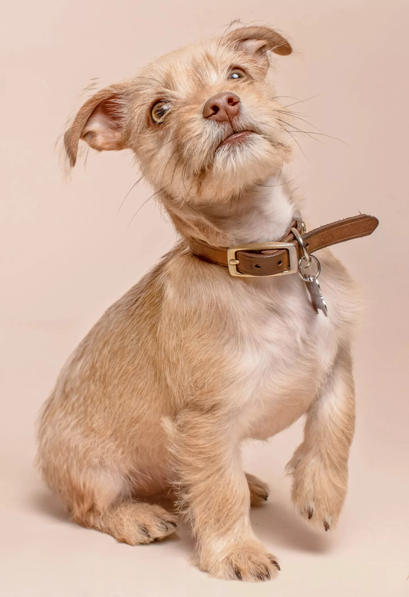

Choroby wewnętrzne
Zajmujemy się interną psów i kotów (gastroenterologia, endokrynologia, neurologia, choroby zakaźne itp.).
Warszawa, Gocław · Celownicza 4 lok. U3
Zdrowie Twojego pupila
w bezpiecznych rękach.

Chcemy, żebyście czuli się u nas swobodnie. Dbamy o zdrowie Waszych psów i kotów.
Chcemy, żebyście czuli się u nas swobodnie. Przyjmujemy psy i koty oraz pomagamy dbać o ich zdrowie.
Zajmujemy się interną psów i kotów (gastroenterologia, endokrynologia, neurologia, choroby zakaźne itp.).
Posiadamy nowoczesny sprzęt diagnostyczny na miejscu oraz współpracujemy z referencyjnymi laboratoriami zewnętrznymi.
Zapewniamy szczepienia oraz programy profilaktyczne.
Współpracujemy z doświadczonymi specjalistami w dziedzinie chirurgii tkanek miękkich.
Oferujemy badanie ECHO i EKG serca, wykonywane przez doświadczonego specjalistę kardiologa.
Oferujemy specjalistyczne badanie ultrasonograficzne.
Oferujemy kompleksową opiekę okulistyczną.
Niesiemy pomoc pacjentom cierpiącym z powodu różnych problemów skórnych.
Zapewniamy profilaktykę oraz leczenie chorób jamy ustnej.
Oferujemy pomoc pacjentom borykającym się z ostrymi i przewlekłymi chorobami nerek.
Diagnozujemy i rozwiązujemy problemy dolnych dróg moczowych.
Wykonujemy pomiar ciśnienia krwi metodą dopplerowską.
Wystawiamy paszporty, umożliwiając podróże zwierząt poza granice kraju.
Oferujemy usługę elektronicznego znakowania zwierząt z rejestracją w międzynarodowej bazie Safe Animal.
Nieustannie podnosimy własne standardy, pogłębiając dla Was naszą wiedzę podczas licznych szkoleń i konferencji. Do każdego pacjenta podchodzimy indywidualnie i z zaangażowaniem, bo każda psyjacielska łapka jest równie ważna.
lekarz weterynarii
lekarz weterynarii
lekarz weterynarii
lekarz weterynarii
lekarz weterynarii
lekarz weterynarii
lekarz weterynarii

Tekst roboczy: tutaj opiszemy przestrzeń przychodni, przebieg wizyty i dostępne na miejscu wyposażenie.
Tekst roboczy: krótki opis poczekalni i organizacji wizyty z psem lub kotem.
Tekst roboczy: lista wyposażenia i badań, po potwierdzeniu jej przez zespół przychodni.
Tekst roboczy: opis tego, czego opiekun i zwierzę mogą spodziewać się w gabinecie.
Wszystkie rekomendacje pochodzą z Google Maps. Średnia ocena w Google: 4,8 na podstawie 92 opinii (stan zweryfikowany 6.10.2026).
Przemiła atmosfera i profesjonalna pomoc. Panie Doktor Ostrowska i Podkowa mają lata doświadczenia, a przede wszystkim najaktualniejszą wiedzę, dzięki temu udało się pomóc mojemu psiakowi. Odwiedzaliśmy inne lecznice i dopiero tutaj udało się właściwie zdiagnozować, znaleźć przyczynę i podjąć właściwe leczenie. Szczerze polecam. Będziemy wracać!
Piotr Gronkiewicz
Doktor Magda Ostrowska to fantastyczna weterynarka- z ogromną wiedzą, bardzo zaangażowana, wnikliwa i z sercem na dłoni. Opiekowała się moimi kotami przez lata, dzieki jej starannej opiece oraz pomysłom na leczenie, moja kotka z niewydolnością nerek żyła kilka lat więcej niż wskazywały początkowe diagnozy u innych weterynarzy. Ogromnie polecam dla wszystkich kociarzy i psiarzy.
Alicja Włodarczyk
„Przegląd” i rutynowe zabiegi na wysokim poziomie. Bardzo sympatyczna pani weterynarz Aleksandra Podkowa, czuć zaangażowanie w wykonywaną pracę, doskonałe podejście do sierściatego pacjenta. Gorąco polecam.
Agnieszka Bus
Miejsce nowe, ale jakby już znane. Wszystko za sprawą bardzo przyjemnych Doktor, które opieką okrywają nie tylko czworonożnych pupili, ale i ich właścicieli. Wrócimy!
Kari Babik
Z Panią dr Magdą Ostrowską znamy się od lat. Prowadzi i prowadziła wszystkie nasze zwierzaki. Doświadczona, profesjonalna, opiekuńcza i empatyczna. Z całego serca polecamy lecznicę Psyjaciele!
Julia Wiśniewska
Pełen profesjonalizm. Pani Ola z sercem i ogromnym zaangażowaniem zajęła się moją pociechą. To nie nasze pierwsze spotkanie ale i nie ostatnie. Na pewno wrócimy! Polecam całym serduszkiem.
Sandra Sulich
Dbamy o zdrowie
i dobre samopoczucie
Twojego pupila!

Kilka prostych przygotowań pomoże nam poznać Twojego psyjaciela i sprawniej przeprowadzić wizytę.
Zabierz książeczkę zdrowia lub paszport oraz dokumentację z wcześniejszych wizyt.
Przygotuj dotychczasowe wyniki badań i wypisy z innych lecznic. Mogą być też zapisane w telefonie.
Zapisz nazwy podawanych leków i suplementów, ich dawki oraz godziny podawania.
Spisz, co Cię niepokoi i od kiedy. Jeśli zachowanie trudno pokazać w gabinecie, zabierz krótkie nagranie.
Psa przyprowadź na smyczy, a kota w zamkniętym transporterze. Zabierz znajomy kocyk, który pomoże psyjacielowi poczuć się swobodniej.
Przyjdź kilka minut wcześniej. Jeśli Twój psyjaciel obawia się wizyt lub innych zwierząt, powiedz nam o tym przy rezerwacji.
ul. Celownicza 4 lok. U-3
04-175 Warszawa, Gocław
Wejście od tyłu budynku przy ul. Celowniczej 4.
Przystanek: Zajezdnia Ostrobramska.
Tekst roboczy: miejsce na krótki opis trasy od przystanku.
Tekst roboczy: miejsce na potwierdzone informacje o parkowaniu i dostępności wejścia.
W godzinach pracy przychodni przyjmujemy pilne przypadki — prosimy o kontakt telefoniczny.
Zadzwoń: 537 821 345Skontaktuj się z lecznicą całodobową.
Do uzupełnienia: nazwa lecznicy, adres i telefon po potwierdzeniu przez zespół.
Jeśli masz jakieś pytania lub po prostu chcesz powiedzieć cześć, nie wahaj się z nami skontaktować. Odpowiemy wkrótce.
Przychodnia weterynaryjna Psyjaciele
ul. Celownicza 4 lok. U-3
04-175 Warszawa
Wejście od tyłu budynku przy ul. Celowniczej 4.
Przystanek: Zajezdnia Ostrobramska.
Google Maps
+48 537 821 345
kontakt@psyjacielevet.pl
Pilne przypadki przyjmujemy w godzinach pracy przychodni — prosimy o kontakt telefoniczny.
Poza godzinami pracy skontaktuj się z lecznicą całodobową.
Zadzwoń pod 537 821 345 lub napisz na kontakt@psyjacielevet.pl. Podaj, jakiej usługi potrzebuje Twój pies lub kot. Zakres i koszt ustalimy indywidualnie.